[2-2] 新建工程 — 学习笔记
- 课程：江协科技《STM32入门教程-2023版 细致讲解 中文字幕》
- 视频：BV1th411z7sn?p=4，42:14
- 素材：253 帧关键帧（每 10 秒，宽 1280px）+ faster-whisper small 语音转写（821 段）；关键画面截图 16 张随笔记收录（源图在
vidsum_out/stm32_p4/frames/，站内图片在assets/images/stm32-04/） - 字幕情况：该集同样没有 B 站 CC/AI 字幕（yt-dlp 元数据
subtitles为空，视频自带的是画面硬字幕），文本由 ASR 生成，专有名词已按画面校正。
一句话结论
这一集从零搭出**“标准库工程模板”：建 Start / Library / User 三个文件夹并复制固件库文件，Keil 里建同名分组，再配好 Include Paths、USE_STDPERIPH_DRIVER、ST-Link 调试器和 Reset and Run；最后分别用「直接写寄存器」和「调用库函数」点亮 PC13 的 LED 来验证工程，并补充了启动文件怎么选**、六步流程总结和工程架构。
最终工程结构（本集完成时）
| 文件夹 | 放什么 | 来源 |
|---|---|---|
Start |
startup\arm 下全部 8 个 startup_stm32f10x_*.s（Keil 分组里只添加 md.s 一个）、core_cm3.c/h、stm32f10x.h、system_stm32f10x.c/h |
固件库 CMSIS\CM3\... |
Library |
misc.c/h + stm32f10x_*.c/h（标准外设驱动） |
固件库 STM32F10x_StdPeriph_Driver\src 与 inc |
User |
main.c、stm32f10x_conf.h、stm32f10x_it.c/h |
自建 main.c + 固件库 Project\...\Template |
- Keil 工程里建立同名分组
Start / Library / User，把对应文件夹里的文件添加进分组。 - 工程选项：C/C++ 的 Include Paths 声明三个文件夹，Define 填
USE_STDPERIPH_DRIVER；Debug 选 ST-Link，Flash Download 勾 Reset and Run。
0. 三种开发方式（选题铺垫）
| 方式 | 做法 | 特点 | 本课程 |
|---|---|---|---|
| 基于寄存器 | 程序直接配置寄存器 | 最底层、最直接、效率高；但 STM32 寄存器太多，不推荐 | 演示一下，不是重点 |
| 基于标准库（库函数） | 调用 ST 封装好的函数，间接配置寄存器 | ST 封装得好，既能配置寄存器，对开发者也友好 | 本课程使用 |
| 基于 HAL 库 | 图形化界面快速配置 | 适合快速上手，但隐藏底层逻辑，不熟悉 STM32 容易停在浅层 | 学完标准库后了解 |
1. 准备固件库
- 资料链接在视频简介里（江协科技资料下载页 https://jiangxiekeji.com/download.html）。
- 需要的压缩包：
STM32F10x_StdPeriph_Lib_V3.5.0（STM32F10x 标准外设库），解压后主要目录：.htmresc：就两张图片资源，用不到；Libraries：库函数文件（建工程用），含 CMSIS 和STM32F10x_StdPeriph_Driver；Project：官方工程示例和模板（以后用库函数时可参考）；Utilities：STM32 官方评估板（一块小电路板）的测评程序；- 另有库函数发布文档和使用手册，可以闲时翻翻。
2. 新建工程
- 先建一个存放所有工程的总文件夹（视频在桌面建了
STM32Project，以后的工程都放这里，便于管理）。 - 打开 Keil5，Project → New uVision Project。
- 在总文件夹里再新建一个本次工程的文件夹（视频命名
2-1 STM32工程模板，用文件夹名说明这个工程是干啥的）。 - 给工程文件起名：起一个通用名字（视频用
project）。原因：文件夹名以后很好改，工程名以后不太好改。 - 选择器件型号：芯片是 STM32F103C8T6，这里选 STM32F103C8，点 OK。
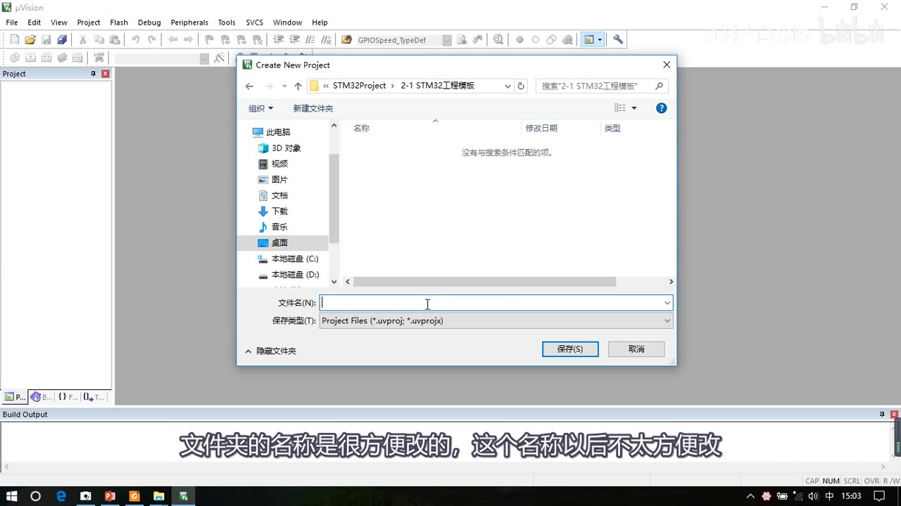
图 1：Keil 新建工程，选择工程文件夹并命名
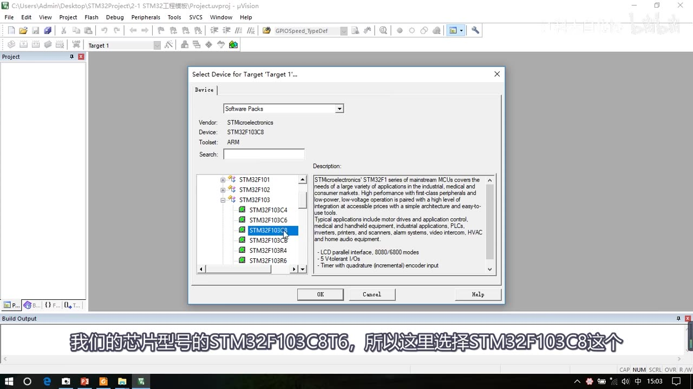
图 2：Select Device 里选择 STM32F103C8
- 会弹出 Manage Run-Time Environment（新建工程小助手），本集暂时不用，直接关掉。此时工程还是空的、不能直接用，需要添加工程必要文件。
3. 复制工程必要文件到 Start
先复制 CMSIS 内核相关文件：
| 文件 | 作用 | 固件库位置 |
|---|---|---|
startup_stm32f10x_*.s（8 个） |
启动文件，程序从这里开始执行；本课 Keil 分组里只添加 md.s 这一个 |
Libraries\CMSIS\CM3\DeviceSupport\ST\STM32F10x\startup\arm |
stm32f10x.h |
STM32 外设寄存器描述文件（类似 51 的 reg52.h），描述有哪些寄存器及地址 |
...\DeviceSupport\ST\STM32F10x\ |
system_stm32f10x.c/h |
配置系统时钟，72MHz 主频就是这里配置的 | 同上 |
core_cm3.c/h |
Cortex-M3 内核的寄存器描述（还带内核配置函数） | Libraries\CMSIS\CM3\CoreSupport |
- 在工程文件夹下新建
Start文件夹：先把startup\arm里全部 8 个启动文件复制进去（Ctrl+A 全选），再复制stm32f10x.h+system_stm32f10x.c/h+core_cm3.c/h。Keil 分组里只添加md.s这一个启动文件，其余 7 个留在文件夹里备用。 - 之后 Keil 自动生成的
DebugConfig、Listings、Objects等文件夹是输出/调试目录，不用管。
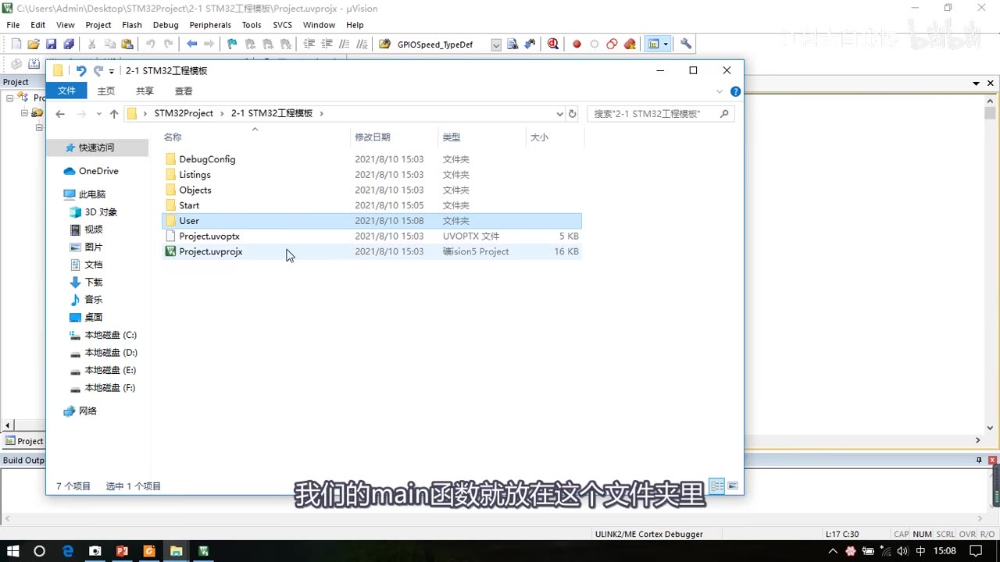
图 3：工程文件夹里新建 Start/User 等文件夹来分类放置文件
4. 在 Keil 里建分组、加文件
- 把工程里的
Source Group 1选中再单击一下，改名为Start。 - 在
Start上右键 → Add Existing Files to Group 'Start'。 - 文件过滤器选 All files，打开
Start文件夹。 - 先添加启动文件
startup_stm32f10x_md.s（前缀md= Medium Density，中容量；Start 文件夹里 8 个启动文件都有，但工程里只能加一个）。 - 再按住 Ctrl 多选其余
.c和.h文件，点 Add → Close。
- 带小钥匙图标的文件是只读文件，这些是 STM32 最基本的文件，不需要修改，添加进来即可。
- 最后在工程选项里声明
Start的头文件路径，否则编译器找不到.h：魔术棒 → C/C++ → Include Paths → 新建一行，点右侧...把Start路径加进来（先加..\Start，后面再加 User 和 Library）。
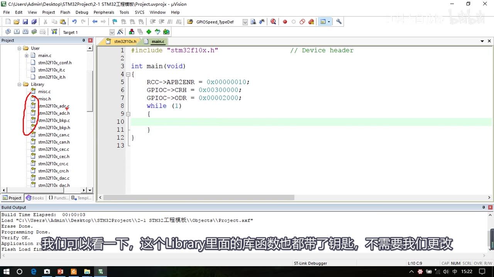
图 4：Keil 工程里的 Start / Library / User 分组与文件（全部建完后的最终状态，画面已滚动到 User/Library；Library 分组在步骤 8 才加入；带小钥匙的是只读文件）
5. 建 User 分组和 main.c
- 工程文件夹下建
User文件夹，main 函数放在这里。 - Keil 里
Target右键 → Add Group，命名User。 - 在
User上右键 → Add New Item to Group 'User' → 选 C File，名字写main；注意下方 Location 默认是工程根目录，要手动把路径选到 User 文件夹。 - main.c 里写最小程序：
#include "stm32f10x.h"
int main(void)
{
while (1)
{
}
}
- 注意：
main是返回int、参数void；文件最后一行必须是空行，否则会报警告。 - 编译（Build）后显示 0 Errors, 0 Warnings，说明工程能正常编译——此时还是基于寄存器的工程。
6. 接硬件、配置调试器与下载
- 准备：STM32 最小系统板 + ST-Link + 4 根母对母杜邦线；按板子引脚旁的标识连接 3.3V、SWDIO、SWCLK、GND，然后把 ST-Link 插到电脑 USB。
- 上电现象：板上电源灯长亮，接在 PC13 口的 LED 默认闪烁（这是芯片里预装的测试程序）。
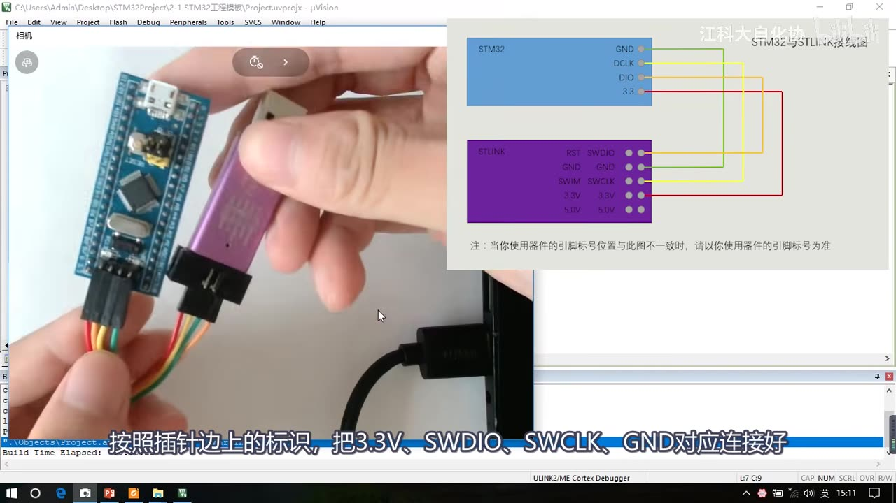
图 5：ST-Link 与最小系统板的 SWD 接线（3.3V / SWDIO / SWCLK / GND）
- Keil 里点魔术棒 → Debug 选项卡：默认调试器是 ULINK，我们用的是 ST-Link，所以下拉选 ST-Link Debugger。
- 点右侧 Settings → Flash Download 选项卡 → 勾选 Reset and Run：
- 勾上后下载完程序会立即复位并执行；
- 否则每次下载后还要手动按一下板子上的复位键。
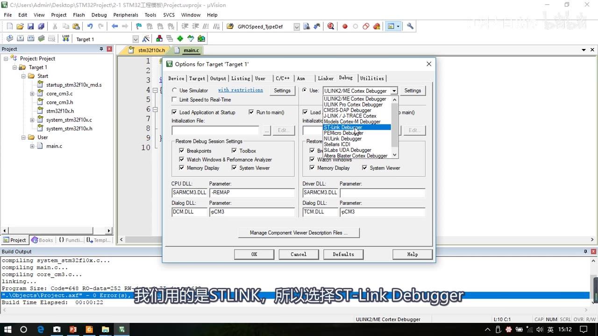
图 6：Debug 选项卡选择 ST-Link Debugger
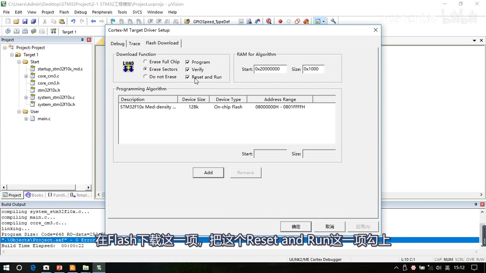
图 7：Flash Download 里勾选 Reset and Run
- 重新编译，点 Load 按钮下载。程序下载成功后，板子 PC13 的灯不再闪（因为当前程序是空的）。
7. 演示：寄存器方式点灯（理解底层）
打开 STM32 参考手册，点灯只需要配置 3 个寄存器：
| 寄存器 | 配置 | 值 |
|---|---|---|
RCC_APB2ENR |
GPIO 都是 APB2 外设；IOPCEN（bit4）写 1 使能 GPIOC 时钟 |
0x00000010 |
GPIOC_CRH |
PC13 的 CNF13 = 00（通用推挽输出）、MODE13 = 11（输出 50MHz） |
0x00300000 |
GPIOC_ODR |
ODR13 写 1 = 高电平，写 0 = 低电平；本板 LED 低电平点亮 |
0x00002000（灭）/ 0x00000000（亮） |
#include "stm32f10x.h"
int main(void)
{
RCC->APB2ENR = 0x00000010; // 使能 GPIOC 时钟
GPIOC->CRH = 0x00300000; // PC13 通用推挽输出，50MHz
GPIOC->ODR = 0x00002000; // 高电平（灭）；改成 0x00000000 则亮
while (1)
{
}
}
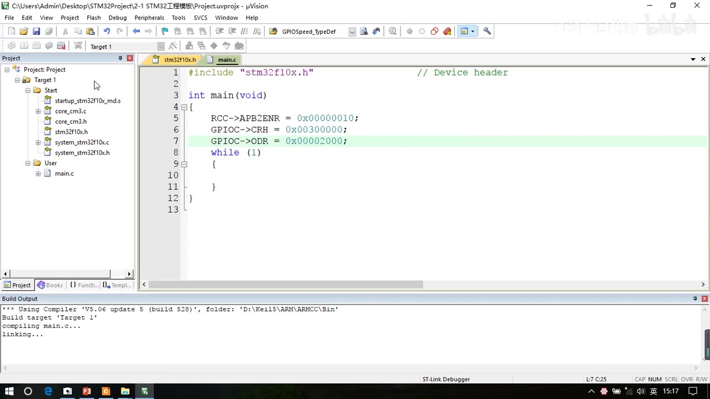
图 8：寄存器点灯代码（RCC_APB2ENR / GPIOC_CRH / GPIOC_ODR）
- 编译、下载后观察：
ODR = 0时灯亮，ODR = 0x2000时灯灭。 - 弊端：直接给整个寄存器赋值，会把 PC13 之外的其他位也配置成 0，影响其他端口的原有配置；要只改 PC13 就得用
&=、|=操作，更麻烦——这正是需要库函数的原因。
8. 加入库函数（补全 Library / User / Define / Include Paths）
- 工程文件夹下新建
Library文件夹。 - 打开固件库
Libraries\STM32F10x_StdPeriph_Driver\src，Ctrl+A 全选.c文件复制到Library；再打开...\inc，Ctrl+A 全选.h文件复制到Library。misc.c是内核相关的库函数，其余是外设库函数。
- Keil 里
Target右键 → Add Group，命名Library；右键 → Add Existing Files，打开 Library → Ctrl+A 全选 → Add。 - 还需要 3 个“库函数配置”文件：打开固件库
Project\STM32F10x_StdPeriph_Template，把stm32f10x_conf.h、stm32f10x_it.c、stm32f10x_it.h复制到工程User文件夹，并在User分组里添加。stm32f10x_conf.h用来配置库函数头文件的包含关系，里面还有库函数需要的参数检查宏；stm32f10x_it.c/h用来存放中断服务函数。
- 打开
stm32f10x.h翻到最后，能看到条件编译：
#ifdef USE_STDPERIPH_DRIVER
#include "stm32f10x_conf.h"
#endif
所以要让库函数生效，必须在魔术棒 → C/C++ → Define 里填上 USE_STDPERIPH_DRIVER。
6. 同时在 Include Paths 里补上 ..\User 和 ..\Library（加上之前的 ..\Start，三个文件夹都声明）。
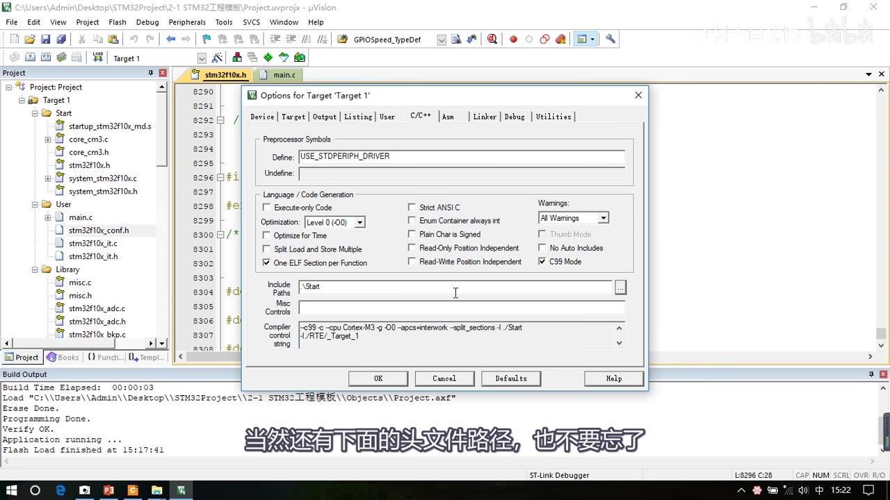
图 9：C/C++ Define 填 USE_STDPERIPH_DRIVER
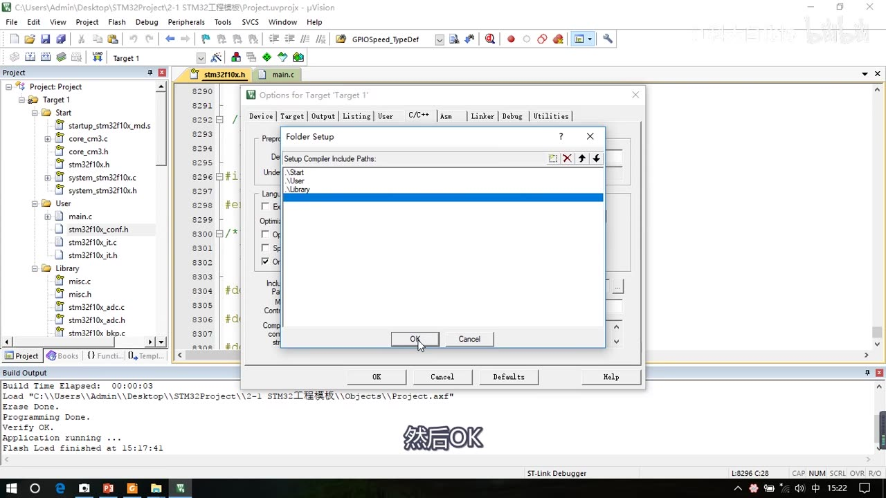
图 10：Include Paths 声明 ..\Start、..\User、..\Library
- 重新编译：第一次编译比较慢（要编译整个库），以后就快了；结果 0 Errors, 0 Warnings，库函数工程建立成功。
- Library 里的库函数文件也都带小钥匙（只读），不需要修改；我们唯一要改的是 User 里的文件。
STM32F10X_MD这个字符串 Keil 新建工程时已经自动声明了，不需要额外加。
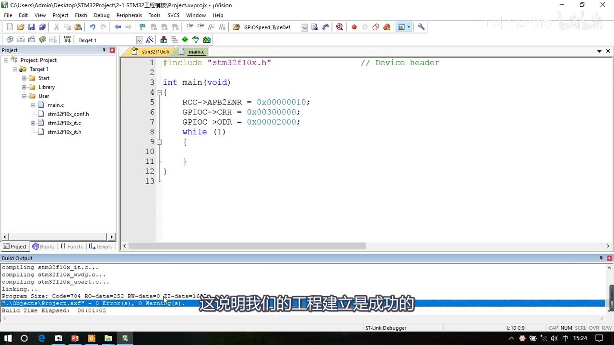
图 11：库函数工程编译成功：0 Error(s), 0 Warning(s)（此时 main.c 里还是寄存器代码，第 9 节才换成库函数）
9. 演示：库函数方式点灯（对比）
#include "stm32f10x.h"
int main(void)
{
RCC_APB2PeriphClockCmd(RCC_APB2Periph_GPIOC, ENABLE); // 使能 GPIOC 时钟
GPIO_InitTypeDef GPIO_InitStructure;
GPIO_InitStructure.GPIO_Mode = GPIO_Mode_Out_PP; // 通用推挽输出
GPIO_InitStructure.GPIO_Pin = GPIO_Pin_13; // PC13
GPIO_InitStructure.GPIO_Speed = GPIO_Speed_50MHz; // 50MHz
GPIO_Init(GPIOC, &GPIO_InitStructure); // 配置生效
GPIO_SetBits(GPIOC, GPIO_Pin_13); // PC13 高电平（灭）
// GPIO_ResetBits(GPIOC, GPIO_Pin_13); // PC13 低电平（亮）
while (1)
{
}
}
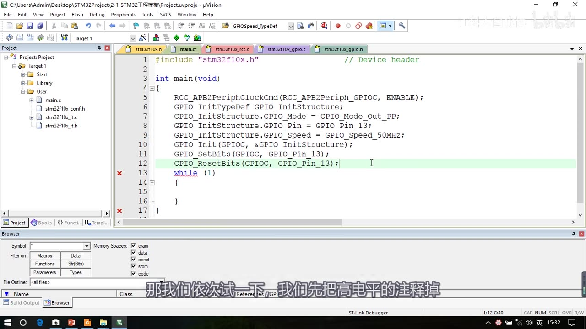
图 12：库函数点灯代码（RCC_APB2PeriphClockCmd / GPIO_Init / GPIO_SetBits）
- 库函数内部仍然是配置寄存器，但它已经用
|=和&=操作，不会影响寄存器的其他位；代码比寄存器方式长，但语义明确，也不用查手册算寄存器值。 - 下载验证：注释掉高电平、放开低电平 → 灯亮；反过来 → 灯灭。
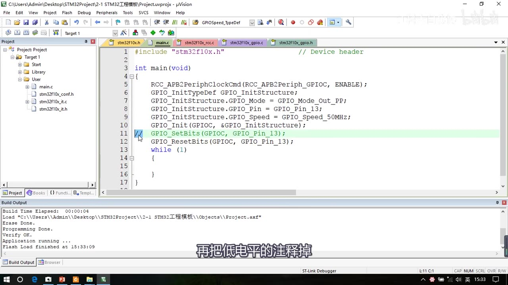
图 13：库函数程序下载成功（Build Output 显示 Programming / Verify OK、Application running）
10. 补充一：启动文件怎么选
启动文件按芯片容量分很多种，选错会出问题。STM32F1 系列的型号分类与缩写：
| 缩写 | 释义 | Flash 容量 | 型号 |
|---|---|---|---|
| LD_VL | 小容量产品超值系列 | 16–32K | STM32F100 |
| MD_VL | 中容量产品超值系列 | 64–128K | STM32F100 |
| HD_VL | 大容量产品超值系列 | 256–512K | STM32F100 |
| LD | 小容量产品 | 16–32K | STM32F101/102/103 |
| MD | 中容量产品 | 64–128K | STM32F101/102/103 |
| HD | 大容量产品 | 256–512K | STM32F101/102/103 |
| XL | 加大容量产品 | 大于 512K | STM32F101/102/103 |
| CL | 互联型产品 | — | STM32F105/107 |
- 选择规则：F100 → 选带
VL的，再按 Flash 选 LD/MD/HD；F101/102/103 → 选不带 VL 的，再按 Flash 选 LD/MD/HD/XL；F105/107 → 直接选CL。 - 启动文件目录（
startup\arm）里共有 8 个：startup_stm32f10x_cl/hd/hd_vl/ld/ld_vl/md/md_vl/xl.s，文件名后缀和上表缩写一一对应。 - 本课程芯片 STM32F103C8T6：Flash 64K，所以选
startup_stm32f10x_md.s（MD）。
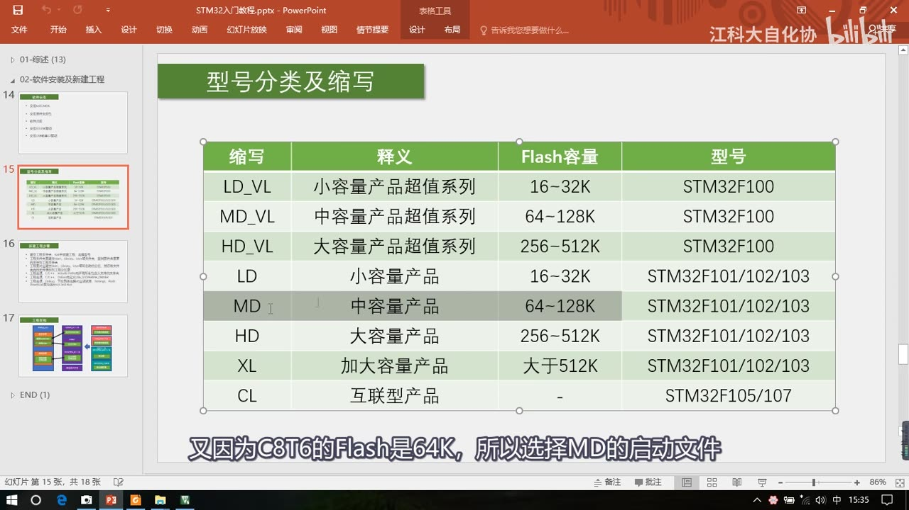
图 14：型号分类与缩写，C8T6 的 Flash 是 64K，对应 MD 启动文件
11. 补充二：新建工程六步总结
- 建立工程文件夹，Keil 中新建工程、选择型号。
- 工程文件夹里建立
Start、Library、User等文件夹，复制固件库里面的文件到工程文件夹（一定要复制到工程内，不要添加工程外文件，否则外面文件一挪位置工程就找不到）。 - 工程里对应建立同名称分组，然后把文件夹内的文件添加到工程分组里（Keil 不能直接添加文件夹，所以要先建组再逐组加文件）。
- 工程选项 → C/C++ → Include Paths 声明所有包含头文件的文件夹（自己建的文件夹 Keil 并不知道，必须声明）。
- 工程选项 → C/C++ → Define 定义
USE_STDPERIPH_DRIVER（使用库函数的条件编译；其他工程里常见的STM32F10X_MD字符串 Keil 已自动声明）。 - 工程选项 → Debug：下拉列表选择对应调试器 → Settings → Flash Download 勾选 Reset and Run。
- 视频补充：文件夹的名称和数量没有限制，可以按自己的理解来建；把
.h文件也加进工程是 UP 主自己的习惯（.h不参与编译，很多工程不添加）。
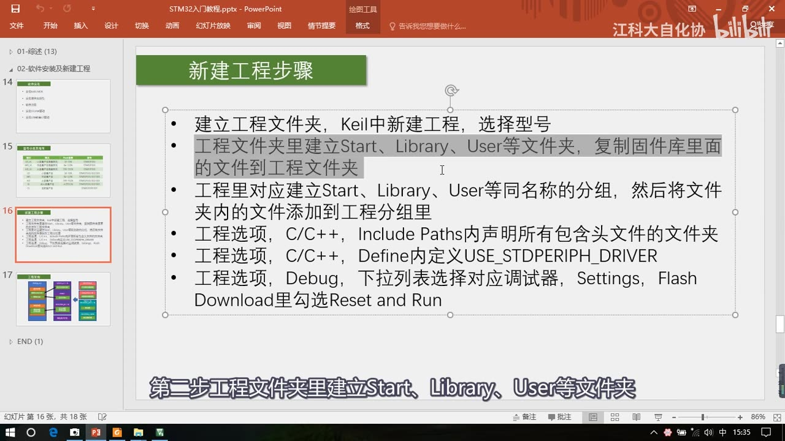
图 15：新建工程六步总结（PPT）
12. 补充三：工程架构与各文件作用
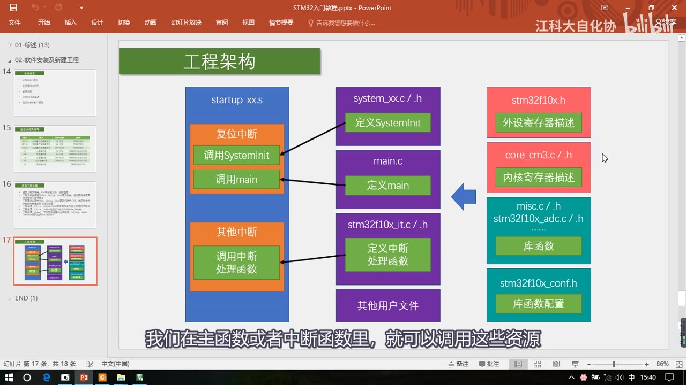
图 16：工程架构（左：启动文件；中：用户代码；右：STM32 资源——寄存器描述、库函数、库函数配置）
startup_xx.s启动文件：汇编编写，定义了中断向量表、中断服务函数；其中复位中断是整个程序的入口，复位后做两件事：调用SystemInit→ 调用main。main 的最后一定是死循环（单片机程序永不结束）。system_stm32f10x.c/h：定义SystemInit，配置系统时钟、Flash、PLL 等；在 main 之前就把时钟等底层配置好了（不需要我们改）。main.c：用户主程序入口。stm32f10x_it.c/h：定义 STM32 的中断服务函数（启动文件里定义的是弱符号，实际处理写在这里；也可以自己定义用户文件来封装中断）。stm32f10x.h：外设寄存器描述（寄存器名、每一位名字、地址）。core_cm3.c/h：内核（Cortex-M3）寄存器描述。misc.c/h+stm32f10x_xxx.c/h（Library）：ST 封装好的库函数，把寄存器操作包装成人性化的函数。stm32f10x_conf.h：配置库函数头文件包含关系；它被stm32f10x.h在USE_STDPERIPH_DRIVER条件下包含，所以用户代码只需#include "stm32f10x.h"就能用所有库函数。
13. 坑与易错点
- 工程名不好改、文件夹名好改：工程名起通用名（如
project），用外层文件夹名区分不同实验。 - 文件一定要复制进工程文件夹：添加工程外部的文件，外部路径一变动工程就找不到文件。
- 启动文件只能加一个，后缀要对：F103C8T6 用
startup_stm32f10x_md.s（MD）；选错容量后缀会出问题。 - Include Paths 必须声明自己建的每个文件夹：否则编译时报找不到头文件。
- Define 必须写
USE_STDPERIPH_DRIVER：不写的话stm32f10x_conf.h不会被包含，库函数头文件都找不到。 - main.c 的 main 是
int main(void)，文件最后一行要留空行，否则报警告。 - 编码设为 UTF-8：出现中文乱码时检查 Edit → Configuration → 编码设置；顺手可把字号调 14、Tab 设 4。
- Debug 默认是 ULINK：用 ST-Link 必须改成 ST-Link Debugger；Flash Download 勾 Reset and Run，下载后自动复位运行。
- 寄存器直接赋值会影响其他位：只改某一位要用
&=、|=；库函数内部已经处理好了。 - 第一次编译慢是正常的：要编译整个标准外设库，之后改代码就快了。
时间轴
| 时间 | 内容 |
|---|---|
| 0:00 | 本集任务：建立基于标准库的 STM32 工程；三种开发方式对比（寄存器 / 标准库 / HAL） |
| 1:50 | 解压 STM32F10x_StdPeriph_Lib_V3.5.0，介绍 Libraries / Project / Utilities |
| 3:20 | 建总文件夹 STM32Project，Keil 新建工程、建 2-1 STM32工程模板 文件夹、起工程名 project |
| 4:45 | 选择器件 STM32F103C8；关掉 Manage Run-Time Environment 小助手 |
| 5:10 | 从固件库复制启动文件、stm32f10x.h、system 文件、core_cm3 到 Start 文件夹 |
| 7:30 | Keil 里建 Start 组、添加文件（启动文件 + 其余文件），文件带小钥匙（只读） |
| 9:05 | 魔术棒 → C/C++ → Include Paths 添加 ..\Start |
| 9:45 | 建 User 文件夹和 main.c，写最简 main 函数；11:00 左右编译 0 错误 0 警告 |
| 11:50 | 调整字号、编码 UTF-8、Tab = 4 |
| 12:50 | 硬件接线：最小系统板 + ST-Link + 4 根杜邦线（3.3V/SWDIO/SWCLK/GND），上电 PC13 灯闪烁 |
| 13:35 | Debug 选 ST-Link Debugger，Flash Download 勾 Reset and Run，下载空程序后灯不闪 |
| 14:35 | 寄存器点灯：参考手册里配置 RCC_APB2ENR、GPIOC_CRH、GPIOC_ODR，观察亮灭 |
| 18:55 | 加 Library 文件夹（库函数 .c/.h）、User 里补 conf/it 文件，建 Library 分组 |
| 22:00 | Define 填 USE_STDPERIPH_DRIVER，Include Paths 补 ..\User、..\Library，重新编译 |
| 23:30 | 库函数点灯：RCC_APB2PeriphClockCmd、GPIO_Init、GPIO_SetBits/ResetBits，下载验证 |
| 31:35 | 补充一：启动文件选择（LD/MD/HD/XL/VL/CL 与型号对应） |
| 33:40 | 补充二：新建工程六步总结与每一步的原因 |
| 36:53 | 补充三：工程架构——启动文件、SystemInit、中断、寄存器描述、库函数、conf |
| 42:00 | 总结：基于库函数的工程建好，下一节开始学 GPIO |
存疑
- 转写由 faster-whisper small 生成（本集 B 站无 CC 字幕，只能走 ASR）。ASR 专名错字已按画面校正：寄存器→“计存器/技能器”、库函数→“库喊数/酷寒数”、main→“命函数/组函数”、User→“优势/优设”、Library→“Lebris/LABORING/Leborate”、GPIOC→“GPLC”、Flash→“Flex”、调试器→“调识器”、器件型号→“7件型号”、Keil→“K5/KO5/KL/Q”、锁相环→“锁像环”、system 文件→“SystemCattle/SystemCat”等。
- 版本以画面为准：固件库 V3.5.0；Keil 工程文件为
Project.uvprojx，工程路径在视频机上是C:\Users\Admin\Desktop\STM32Project\2-1 STM32工程模板\。 - 本集把下一节 [3-1] GPIO 输出要讲的“库函数点灯”提前演示了一遍，笔记里也按视频顺序保留；GPIO 的详细结构、8 种模式等内容在下一集展开（“8 种模式”见课程大纲，本集未展开）。
- 视频没有演示 Output 选项卡的 Create HEX File，也没有改 Target 选项卡的 Xtal（视频 09:00 的 Options → Target 画面里 Xtal 显示 12.0MHz，全程未改动、也未提及），笔记不写入这些未讲内容；需要时再按需配置。
- 启动文件/型号分类表以视频 PPT 和官方参考手册为准，不同型号请对表选择。